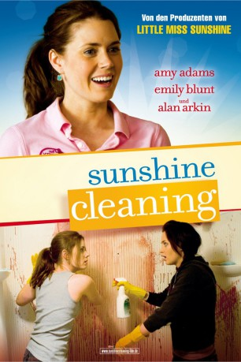
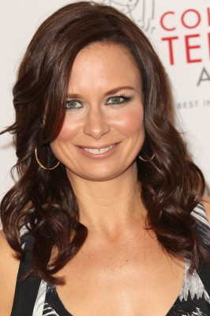
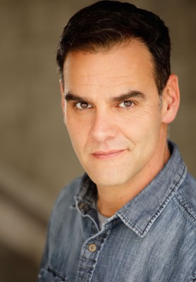
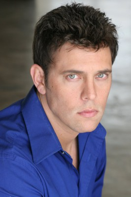

#1956 Sunshine Cleaning
 
 IMDB-Wertung: 6.9 / 10
IMDB-Wertung: 6.9 / 10  Metascore: 61
Metascore: 61 
Um ihre Finanzkrise zu meistern, starten die beiden Schwestern Rose und Norah ein ungewöhnliches Geschäft. Sie gründen die Firma “Sunshine Cleaning” und kratzen Blut von den Wänden - kurz: sie reinigen Tatorte. Die beiden werden von ihrem unkonventionellen Vater Joe unterstützt, der mit verschiedenen sonderbaren Mini-Jobs versucht, Rechnungen zu zahlen und seinem 8jährigen Enkel nebenher beibringt, wie man binnen kürzester Zeit eine Million Dollar verdienen kann.
Jahr: 2008
Dauer: 91 Minuten
FSK: 12
Land: USA Studio: Overture FilmsTonspuren: DTS - ,
Untertitel: Deutsch,
Auflösung: 1080p (1920x800) Größe: 5089 MB
Genre: Komödie, Drama
Regisseur: Christine Jeffs
Drehbuch: Megan Holley
Soundtrack: Michael Penn
Darsteller:
 Amy Adams als Rose
Amy Adams als Rose Emily Blunt als Norah
Emily Blunt als Norah Alan Arkin als Joe
Alan Arkin als Joe- Jason Spevack als Oscar
 Steve Zahn als Mac
Steve Zahn als Mac-  Mary Lynn Rajskub als Lynn
 Clifton Collins Jr. als Winston
Clifton Collins Jr. als Winston Eric Christian Olsen als Randy
Eric Christian Olsen als Randy Paul Dooley als Sherm
Paul Dooley als Sherm Kevin Chapman als Carl
Kevin Chapman als Carl- Judith Jones als Paula Datzman-Mead
- Amy Redford als Heather
-  Christopher Dempsey als Gun Shop Suicide
 Vic Browder als Gun Shop Owner
Vic Browder als Gun Shop Owner Arron Shiver als Detective
Arron Shiver als Detective- Mike Miller als Counselor
- Pab Schwendimann als Apartment Super
 William Sterchi als Candy Store Manager
William Sterchi als Candy Store Manager- Amber Midthunder als Candy Store Girl
- Angelique Midthunder als Girl's Mother
- Esodie Geiger als Reporter
 Kevin Wiggins als Police Officer
Kevin Wiggins als Police Officer- Marya Beauvais als TV Waitress / Mother
 Maddie Corman als Mousy Baby Shower Guest
Maddie Corman als Mousy Baby Shower Guest- Rebekah Wiggins als Peppy Baby Shower Guest
-  Josh Berry als TV Detective
- John H. Euber als Seminar Student , uncredited
 Kathy Lamkin als Fair N Square Owner , uncredited
Kathy Lamkin als Fair N Square Owner , uncredited- Ivan Brutsche als Above and Beyond Worker
- Ralph Jason Aukison als Gun Shop Employee #1
- Cliff Garstka Sr. als Gun Shop Employee #2
- Charles Domenici als Gun Shop Employee #3
- Susie Yip als Mrs. Kim
- Sarah Hudnut als Teacher
- Anya Alyassin als Mac's Daughter
- Olive Gallagher als Seminar Speaker
- Lois Geary als Mrs. Davis
- Frank E. Cruz als Shrimp Truck Driver
- Epifanio Hernández als Restaurant Owner
- McKenna Hutton als Young Rose
- Mason Frank als Young Norah
- Kristin Reese als Hinkle's Employee Singer #1
- Veronica Hernandez als Hinkle's Employee Singer #2
- Jourdan Reese als Hinkle's Employee Singer #3
- Jason Henning als Guy In White Coat , uncredited
- Davin Ruggles als Paulas daughter , uncredited
Datei: X:\2008(N-Z)\Sunshine Cleaning (2008, FSK12, 1920x800).mkv seit 09.09.2015
Festplatte: HD 2008(G-Z)-2009(A-F)
 Es gibt insgesamt 91 Filme in der Gruppe '2008(N-Z)'
Es gibt insgesamt 91 Filme in der Gruppe '2008(N-Z)'